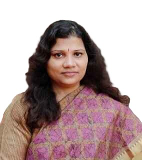

Engineering materials for the next generation.
Research at the intersection of high-entropy alloys, advanced composites, microstructure–property relationships, corrosion, and data-driven materials science.
*Profile counts and affiliations should be refreshed against the live profiles at launch.

Materials science with a strong experimental foundation.
Dr. Khushbu Dash is an Assistant Professor at Amrita Vishwa Vidyapeetham, Chennai. Her research spans high-entropy alloys, eutectic HEAs, multilayered structures, metal-matrix nanocomposites, oxidation and mechanical behaviour of advanced materials.
High-Entropy Alloys
Alloy design, eutectic HEAs, multilayered structures, processing and deformation.
Advanced Composites
Cu, Mg and Al based metal-matrix composites, interfaces, texture and microstructural integrity.
AI & Materials
Image-driven deep learning, machine-learning prediction and emerging physics-informed approaches.
From processing and microstructure to performance.
A portfolio connecting advanced processing, characterization and computational methods.
Eutectic high-entropy alloys
Compositionally complex alloys, hierarchical microstructures, deformation mechanisms and process–structure–property relationships.
Metal-matrix micro & nanocomposites
Processing, interfaces, thermal effects, mechanical behaviour and microstructural evolution of Al-, Cu- and Mg-based composites.
Image-driven materials characterization
Deep learning approaches for automated microstructural recognition and materials analysis.
Oxidation and atmospheric corrosion
Oxidation of aluminium alloys and machine-learning-based prediction of atmospheric corrosion rates.
Publications are a core part of this website.
The list below is populated from the publicly available Amrita faculty publication record and can be expanded/synchronised with Google Scholar for a complete live bibliography.
Machine Learning-Based Prediction of Atmospheric Corrosion Rates Using Environmental and Material Parameters
S. Tiwari, K. Dash, N. Park, N.G.S. Reddy · Coatings 15 (2025) 888.
Design of a nickel–cobalt based eutectic high entropy alloy (NiCo)1.7AlCrFe with hierarchical microstructural length scales
R.J. Vikram, Khushbu Dash, S.K. Aramanda, S. Suwas · Philosophical Magazine.
Image-driven deep learning enabled automatic microstructural recognition
K. Dash, R. Nigam, V. Khavala, N. Mishra · Emerging Materials Research 12(1), 47–51.
Mechanism Controlling Elevated Temperature Deformation in Additively Manufactured Eutectic High-Entropy Alloy
R.J. Vikram, S.K. Verma, Khushbu Dash, D. Fabijanic, B.S. Murty, S. Suwas · Metallurgical and Materials Transactions A.
Strength–Ductility Synergy in High Entropy Alloys by Tuning the Thermo-Mechanical Process Parameters: A Comprehensive Review
K. Dash, R. Sabban, S. Suwas, B.S. Murty · Journal of Indian Institute of Science 102 (2022) 91–116.
High Temperature Deformation Behaviour of Additively Manufactured Eutectic High Entropy Alloy AlCoCrFeNi2.1
R.J. Vikram, K. Dash, B.S. Murty, S. Suwas · Metallurgical and Materials Transactions A 53 (2022) 3681–3695.
Microstructure and mechanical behavior of high toughness Al-based metal matrix composite reinforced with in-situ formed nickel aluminides
A. Pariyar, C.S. Perugu, K. Dash, S.V. Kailas · Materials Characterization 171 (2021) 110776.
In-situ formation of 2D-TiCx in Cu-Ti2AlC composites: an interface reaction study
K. Dash, A. Dash · Materials Letters 284 (2021) 128935.
Graded microstructure and texture in ultrafine grained multi-layered immiscible bimetallic system
K. Dash, K.U. Yazar, K. Chattopadhyay, S. Suwas · Materialia 13 (2020) 100830.
Analysis of high-temperature flexural behaviour of copper–alumina micro-and nanocomposites
K. Dash · Emerging Materials Research 8 (2019) 404–407.
Oxidation studies of Al alloys: Part II Al-Mg alloy
G. Wu, K. Dash, M.L. Galano, K.A.Q. O’Reilly · Corrosion Science 155 (2019) 97–108.
Oxidation studies of Al alloys: Part I Al-Cu (liquid phase) alloy
G. Wu, K. Dash, M.L. Galano, K.A.Q. O’Reilly · Corrosion Science 157 (2019) 41–50.
Response of Al-Based Micro- and Nanocomposites to Rapid Fluctuations in Thermal Environments
Khushbu Dash, B.C. Ray · Journal of Materials Engineering and Performance.
Elastic and Plastic Behavior of an Ultrafine-Grained Mg Reinforced with BN Nanoparticles
Z. Trojanova, K. Dash, K. Mathis, P. Lukac, A. Kasakewitsch · Journal of Materials Engineering and Performance 27 (2018) 3112–3121.
Evaluation of flexural behaviour of thermally and cryogenically conditioned Al-Al2O3 micro- and nano-composites
K. Dash, B.C. Ray · Journal of Materials Engineering and Performance 27 (2018) 3678–3687.
Thermal attributes of aluminium based composites-a review
K. Dash, S. Sukumaran, B.C. Ray · Science and Engineering of Composite Materials 23 (2016) 1–20.
Implications of degree of thermal shock on flexural properties of Cu-Al2O3 micro- and nano-composites
K. Dash, S. Panda, B.C. Ray · Journal of Materials Engineering and Performance 25 (2016) 259–266.
Microscopic evolution in composite powder intermixing process
K. Dash · Microscopy and Analysis (2015).
Internal friction associated with the microstructural changes in an AZ91 magnesium alloy
Z. Trojanova, P. Palcek, A. Soviarova, M. Chalupova, K. Dash, M. Knapek · Kovove Mater 53 (2015).
Microstructural investigation and wear studies on copper-alumina micro- and nano-composites fabricated by spark plasma sintering
K. Dash, D. Chaira, B.C. Ray · Journal of Mechanical Behaviour of Materials 24 (2015) 25–34.
Effects of Thermal and Cryogenic Conditionings on Flexural Behavior of Thermally Shocked Cu-Al2O3 Micro and NanoComposites
Khushbu Dash, Sujata Panda, Bankim Chandra Ray · Metallurgical and Materials Transactions A.
The behaviour of aluminium matrix composites under thermal stresses
Khushbu Dash, Suvin Sukumaran, Bankim C. Ray · Science and Engineering of Composite Materials.
Effect of loading speed on deformation of composite materials: a critical review
K. Dash, S. Sukumaran, B.C. Ray · Journal of Advanced Research in Manufacturing 1 (2014).
Effect of quenching media on properties of aluminium-alumina metal matrix composite
K. Dash, A. Dash, A.K. Nayak, B.C. Ray · Journal of Advanced Research in Manufacturing 1 (2014).
Processing and properties of Cu based micro- and nano-composites
S. Panda, K. Dash, B.C. Ray · Bulletin of Materials Science 37 (2014) 227–238.
Effect of thermal and cryogenic conditioning on flexural behavior of thermally shocked Cu-Al2O3 micro- and nano-composites
K. Dash, S. Panda, B.C. Ray · Metallurgical and Materials Transactions A 45 (2014) 1567–1578.
Process and progress of sintering behavior of copper-alumina composite
K. Dash, S. Panda, B.C. Ray · Emerging Materials Research 2 (2013) 32–38.
Synthesis and characterization of aluminium-alumina micro- and nano-composites by spark plasma sintering
K. Dash, D. Chaira, B.C. Ray · Materials Research Bulletin 48 (2013) 2535–2542.
Analysis of properties of copper-alumina composites produced by various processing routes: a review
S. Gupta, K. Dash, B.C. Ray · Journal of Materials and Metallurgical Engineering 2 (2012) 11–23.
Synthesis and characterization of copper-alumina metal matrix composite by conventional and spark plasma sintering
K. Dash, B.C. Ray, D. Chaira · Journal of Alloys and Compounds 516 (2012) 78–84.
Comparative Analysis of PSO Variants for Efficient Optimization of Hydrogen IC Engines
Khushbu Dash, Aman Panda, Nachiketa Mishra · OITS International Conference on Information Technology (OCIT), IEEE, 2023.
High entropy alloy multilayers: a processing and deformation study
K. Dash, S. Suwas, G. PhaniKumar · MRS 2021 Virtual Event.
Interface study of Mg/Zn bimetallic multilayer composite
K. Dash, S. Suwas · MRSI 2019, IISc Bangalore.
Interface study of Cu/Ta bimetallic multilayer composite
K. Dash, S. Suwas, K. Chattopadhyay · ICON-SAT 2018, IISc Bangalore.
Research is a team sport.
A dedicated space for students, research scholars, collaborators and project partners. Names and profiles can be added as the team directory grows.
Dr. Khushbu Dash
Principal Investigator / FacultyAdvanced materials, HEAs, composites, microstructure and materials informatics.
Research Scholars
PhD / Project ResearchersProfiles for current scholars can be added here with research topic, publication links and ORCID.
Research Collaborators
Academic & IndustryAdd collaborating faculty, laboratories, institutions and industry partners with links to their work.
An international research foundation.
PhD · NIT Rourkela
Metallurgical and Materials Engineering. Thesis on Cu-Al2O3 and Al-Al2O3 micro- and nano-particulate composites.
University of Oxford · Postdoctoral Research
Department of Materials.
Charles University · Postdoctoral Research
Department of Physics of Materials.
IISc Bengaluru · Materials Engineering
Postdoctoral research and advanced materials work.
Amrita Vishwa Vidyapeetham · Chennai
Assistant Professor, School of Engineering.
Let's build something useful.
For research collaboration, PhD opportunities, invited talks, project discussions or industry-linked materials research.
d_khushbu@ch.amrita.edu